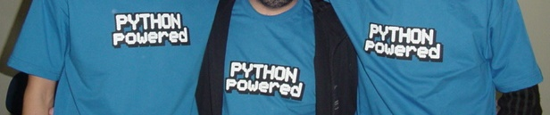
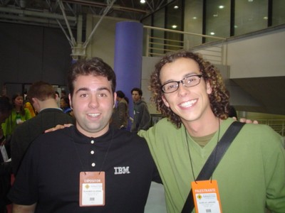
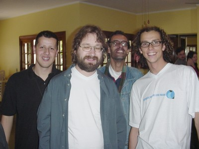
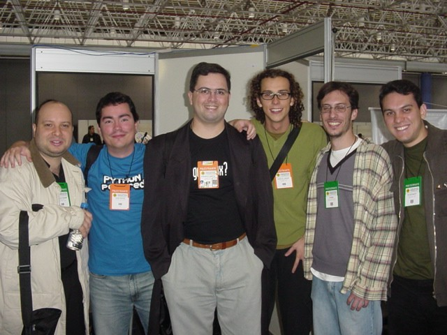

O fórum de Porto Alegre é sem dúvida o maior evento nacional de Software Livre, e este ano tive a honra de participar como palestrante.
Foi incrível. Uma grande festa com pessoas legais, divertidas, animadas, dispostas, engajadas e nerds. E a melhor parte: o reencontro com os amigos.
Na contabilidade geral, foram 5.000 participantes, vindos de todos os estados do país, e ainda gringos que vieram de 35 países! Um mega evento.
Ministrei uma palestra de 1 hora sobre Expressões Regulares no sábado dia 5, e esta página conta as histórias dessa viagem.
Meus agradecimentos à equipe do fórum pela oportunidade e recursos, ao Deivi Kuhn pelo apoio, à Conectiva pela liberação e um obrigado muito especial à Sulamita Garcia, pela força e luta.
Prefácio Sentimentalóide
Este trecho do relato é gay. Só leia se gostar de divagações emotivas e sentimentalismo barato.
Há um ano atrás, em Junho de 2003, a contenção de custos na empresa me fez "ser saído" do meu emprego em Florianópolis. De repente lá estava eu, com todo o tempo do mundo nas mãos, quando li que naquela mesma semana aconteceria o IV FISL em Porto Alegre.
Até aquele momento, eu nunca havia ido a nenhum evento de Software Livre, e nem tinha o menor interesse nisso. Mas quando soube que dois grandes amigos virtuais que eu nunca tinha visto "ao vivo" estariam lá, o Julio Cezar Neves (livro shell) e o Thobias Salazar Trevisan (funções ZZ), comecei a cogitar a idéia de ir até lá.
Dias depois, com alvará de soltura concedido pela esposa, lá estavam eu, o Rudá e o Leslie (dois grandes amigos e ex-Conectivos), indo de Toyota para Porto Alegre.
A viagem e o fórum foram excelentes, e além de encontrar vários amigos no evento, achei muito bacana aquele esquema de palestras, divulgação do conhecimento e animação dos palestrantes e visitantes. Assisti várias palestras e me senti renovado, cheio de idéias novas e vontade de produzir mais.
E lá no meio daquela coisa toda, o que me surpreendeu foi que tanto o Julio quanto o Rubens Queiroz (Dicas-L), vieram me falar que eu também poderia estar lá no palco, dando palestras. Ambos incentivaram muito, falando com uma certeza e segurança de quem parecia já saber tudo iria dar certo.
Naquele momento, sem nunca ter pisado num palco para falar de nerdices, aquilo parecia muito longe e inatingível. Imagina só, eu ali falando para uma sala cheia num fórum internacional... Mas mesmo assim comentei com o Rudá, numa convicção sonhadora: "No ano que vem, eu volto como palestrante."
A viagem acabou, e de volta em Floripa, sem emprego, aquela idéia do Julio e do Rubens ficou me incomodando. Resumindo a história: dois meses depois eu havia escrito uma apostila de Programação em Shell e estava em São Paulo ministrando meu primeiro curso.
Um ano se passou e muito mudou: voltei para Curitiba, voltei a trabalhar na Conectiva, vendi a Toyota, me separei... E no meio de tudo isso, acabei ministrando vários cursos e palestras por aí. Julio e Rubens, vocês estavam certos.
Toda essa história é para tentar ilustrar como foi importante para mim quando recebi a notícia de que minha palestra tinha sido aceita no fórum desse ano. Foi uma alegria imensa, uma realização, a profecia se realizou: em 2003 visitante, em 2004 palestrante. Em um ano tudo aconteceu.
Quero aproveitar o espaço para homenagear estes dois grandes amigos que sempre me apoiaram, e que se não fosse o seu incentivo e força, nada disso estaria acontecendo agora. Julio, Rubens, vocês são os caras. VALEU MESMO.
 Meus padrinhos Julio Neves e Rubens Queiroz, no FISL de 2003
Meus padrinhos Julio Neves e Rubens Queiroz, no FISL de 2003
A Ida
O fórum começou na quarta-feira, mas eu só saí de Curitiba na quinta de noite, às 22:30 horas. Estava cheio de trabalho na Conectiva, e não tive como faltar 3 dias para pegar o evento desde o início.
Vôo rápido, em 1 hora já estava aterrisando em POA. Ah, um detalhe estranho: quando mais viajo de avião, mais sinto medo em voar nessa máquina. A cada viagem cresce a sensação de estar dentro de um sistema repleto de possibilidades de falha, que por milagre acaba chegando e pousando no destino. Não raciocino, apenas sinto.
Ah, dessa vez me superei, e como não levei o iBook, consegui colocar todas as minhas tralhas numa mochilinha nas costas. Como é bom chegar e já sair direto, sem ter que esperar a boa vontade da mala aparecer na esteira...
Do avião para a van, da van para o Hotel. Um tal de Coral Tower, bem legal, quarto grande. Cheguei no hotel era meia-noite, e antes mesmo de fazer o check-in, já conheci a Pia Smith, personalidade autraliana que veio para palestrar no fórum mas naquele momento queria saber como chegar na festa que estava acontecendo ali perto.
Bem, só deu tempo de fazer o check-in, deixar a mochila no quarto e ir direto para a gandaia! Fomos a pé eu, ela, o Sandro (4 Linux) e a Maureen (irlandesa que também falava português) para o tal de Barbazul. Chegando lá, que surpresa: toda a turminha estava lá!

Parece que a noite era exclusiva dos participantes do fórum, então foi no mínimo bizarro ver tantos nerds juntos numa casa noturna com banda ao vivo, fazendo um social. A festa foi longe, até altas horas... Nerds também dançam!
A Sexta
Depois da gandaia, difícil acordar cedo, até o café da manhã do hotel eu perdi. Meu companheiro de quarto ainda não apareceu, parece que era de Curitiba também, mas ainda não chegou.
O evento foi no mesmo lugar do ano passado, a PUC. As instalações estavam iguais as do ano passado, com estandes, salas de palestra, máquinas com Internet e mesas de grupos de usuários.

Já na entrada, muitos, mas MUITOS amigos por lá. Acho que foram umas 3 horas seguidas de "Oi, quanto tempo!", "E aí, beleza?", "Ah, você também veio!". Foi incrível, todo mundo estava lá! Eu não esperava encontrar tantos conhecidos no mesmo lugar, só isso já valeu a viagem.
Fiquei só de papo o dia todo, vi só duas palestras de Python. Por falar nisso, muitos me disseram que a palestra do dia anterior, "Matando o Java e mostrando o Python", ministrada pelos amigos Rudá Moura e Osvaldo Santana, foi um sucesso. Uma pena que não pude assistir. E as camisetas de Python que o Osvaldo fez venderam como água!

A Mesa Redonda
Na sexta de tarde teve uma mesa redonda, na verdade um palco quadrado, organizado pelo gente-que-faz Leonardo Vaz. Foram quase 20 pessoas que sentaram e discutiram com a platéia sobre o lado negro do Software Livre no Brasil, como a recente onda de politização parasita, as guerras entre distros e o reduzido número de desenvolvedores brasileiros, aqueles nerds que realmente produzem código.

Foi interessante estar lá dividindo o palco com tanta gente boa, vou tentar lembrar de todos:
- Alex Laner - rootsh (Debian)
- Alfredo Kojima (Window Maker)
- Aurelio Marinho Jargas (Desenvolvedor de Softwre Livre)
- Augusto Campos (br-linux.org)
- Deivi Lopes Kuhn (Organização FISL)
- Gustavo Noronha - kov (Gnome)
- Helio Castro (KDE)
- Jambrão (TcheLinux)
- Julio Cezar Neves (livro Shell Script)
- Leonardo Vaz (Guevara Tchê!)
- Marcelo Gondim (Desenvolvedor de Software Livre)
- Osvaldo Santana (pythonbrasil.com.br)
- Piter Punk (Slackware)
- Rafael Jeffman (GoboLinux)
- Ricardo Felipo (Abrasol RJ)
- Roberto Selbach - maragato (KDE)
- Rubens Queiroz (Dicas-L)
- Rudá Moura (Haxent)
- Sulamita Garcia (LinuxChix)

Como meu amigo Rudá não gosta de mim e me cortou na hora que eu estava falando &;), vou colocar aqui o meu pensamento sobre o assunto:
Software Livre: Desenvolvedores e os outros
Muito antes da onda recente de politização do Software Livre, inclusão digital, liberdade tecnológica, ONGs digitais, certificação em Linux, representantes oficiais, porta-vozes da comunidade, paladinos, comitês, movimentos e comissões parlamentares, os desenvolvedores já estavam lá, sentados e produzindo códigos.
Muito antes do Software Livre ser sexy e estar na moda, virar buzzword, aparecer na mídia, virar bandeira política, ganhar revistas especializadas, sites, fórums e listas de discussão, os desenvolvedores já estavam lá, sentados e produzindo códigos.
Muito antes das intermináveis discussões de qual a melhor distro, da fragmentação de comunidades, das ofensas pessoais em canais públicos, da batalha de egos, das brigas internas de um mesmo time e da crítica gratuita, os desenvolvedores já estavam lá, sentados e produzindo códigos.
O mundo vai continuar girando e o sol vai nascer todos os dias, assim como continuarão os ruídos, as brigas e as modas. Enquanto isso, aqueles que fazem, continuarão fazendo.
O Fim de Sexta
No fim da tarde, um lanche na lanchonete da PUC, para conhecer e analisar a "flora local". Não há muito o que dizer, aliás não há nada para dizer. Só nos cabe não babar muito e lembrar de recolher o queixo de vez em quando para não entrar muita sujeira na boca.
De noite teve um mega-churrasco organizado pelo incansável Leonardo Vaz. Era uma festinha íntima, para umas 20 pessoas, e se tornou um evento com quase 100 cabeças. Foi um legítimo churrasco gaúcho feito por gaúchos tchê!
 Bohne - O Churrasqueiro ::: Piter - O Controle de Qualidade
Bohne - O Churrasqueiro ::: Piter - O Controle de Qualidade
A comilança aconteceu na sede do Serpro, mas como eu estava com pouca blusa e o frio naquela noite resolveu dar as caras, fui embora cedo para tentar recuperar o sono não dormido da noite passada.

Ao chegar no quarto do hotel uma surpresa! Havia uma mala no quarto que não era a minha, então meu companheiro tinha chegado, porém só vi mesmo a mala.
O Sábado
Dia seguinte, a mala continuava lá, mas a cama ao lado estava desarrumada, o que significava que alguém tinha de fato dormido ali. Eu não vi ele chegar nem sair. Estranho né? Parece aquele filme, Os Outros. No café da manhã o mistério foi finalmente resolvido e eu conheci o Diego Linke, o FreeBSD-man.
Já no evento, mais papo com os amigos. Ah! Escapei de uma bomba. Tinha sido marcada para as 10 horas, uma "sessão de autógrafos", onde eu ia ficar numa mesa, autografando o livrinho verde de Expressões Regulares. Acho mega palha e estrelinha esse negócio de ficar lá, no "vinde a mim". Mas, como tinha sido marcado, fui lá.
Para meu alívio e total alegria, todos os 50 livrinhos que a Tempo Real levou já tinham sido vendidos, então não precisei pagar o mico. Ufa! Durante o evento várias pessoas chegaram com o livrinho na mão e eu autografei, assim é melhor, mais pessoal.
A Palestra
E 12:45, concorrendo com o almoço, começou a minha palestra sobre Expressões Regulares. A sala tinha capacidade para +- 150 pessoas, e para minha surpresa, ficou lotada. Bastante gente foi solidária e ficou lá comigo, passando fome :)
Ela começou com uma apresentação breve que o Deivi Kuhn fez, e então lá estava eu, no FISL, falando para uma sala cheia. O momento tão esperado se concretizou. Me surpreendi ao ver que a maioria dos ouvintes levantaram a mão quando eu perguntei quem já havia usado Expressões Regulares.
Nunca havia feito essa palestra em apenas 1 hora, e pude comprovar na prática que é pouco tempo para o assunto. Comecei falando sobre as expressões, como e onde utilizá-las. Depois fui para o teclado para demonstrar na prática (no prompt) como elas funcionam, usando o comando grep.
Lá estava eu, mais ou menos em 50, 60% da palestra quando o Deivi vira para mim e diz: "Faltam 5 minutos". Aquela frase foi como um trovão, que depois do estrondo, tudo parece que se aquieta. Pude até ouvir os grilos cantando.
Foram longos 10 segundos pensando o que fazer naquela situação. Não tinha muitas alternativas. Acelerei a língua e tentei mostrar o mais importante, mas ficou faltando o arremate e infelizmente a palestra ficou incompleta. Foi então aberto às perguntas e um pessoal veio tirar suas dúvidas.
Na correria, esqueci totalmente de tirar a já tradicional foto da turma, o que me deixou muito triste. Por favor, peço encarecidamente para quem tirou alguma foto da palestra que me envie. ATUALIZAÇÃO: recebi algumas fotos da palestra, valeu amiguinhos!
 Hora da propaganda: Expressões Regulares e Python ;)
Hora da propaganda: Expressões Regulares e Python ;)
 No final sessão de perguntas, com o Deivi coordenando
No final sessão de perguntas, com o Deivi coordenando
A palestra em si durou 45 minutos e depois foram mais 10 para as perguntas do pessoal. Foi a primeira vez que "tentei" falar menos de duas horas sobre Expressões Regulares. Não rolou. Realmente 1 hora é pouco, ou eu que sou muito tagarela :)
Vou colar aqui um relato que recebi por e-mail, de um cara que mandou o pai dele assistir à minha palestra (!!?!) e que me deixou muito contente:
"Valeu pela força. Depois da sua palestra meu pai, que é um nerd de mainframe aposentado e mal e porcamente queria mexer no Windows, agora tá interessado em fuçar no Linux e com regex ..."
O Fim de Sábado
Lá pelas 6 da tarde teve a cerimônia de encerramento do evento, com direito a hino nacional e côros de "Software Livre". Também divulgaram os números do fórum, e os próximos eventos em outros estados brasileiros. O representante do Ministério da Cultura pulando em cima da mesa foi uma atração única.
A próxima parada foi o Bar Pinguim, onde o papo rolou até tarde. Outra parte do pessoal foi para o CTG 35, comer churrasco. Nós não fomos lá porque o taxista disse que era mega caro, e no fim nem era :/
O Domingo
Depois do café no hotel, eu e o Diego saímos para um passeio à pé pelas redondezas, e fomos até uma praça onde os gaúchos vão andar, correr, levar o cachorro... Como era um domingo de sol, estavam todos lá. Mais uma vez a flora local impressionou.
No almoço, uma parada no último churrasco da viagem, que não lembro quem que estava oferecendo. Muitos gringos por lá, que não se cansavam de tirar fotos dos espetos, das carnes, como quem não estava acreditando em toda aquela fartura de comida.
 Eu, Paulino e Anahuac
Eu, Paulino e Anahuac
Depois aeroporto e avião. Viemos eu, o Diego e o Rubens Queiroz papeando até Curitiba. Ah, o Rubens estava de aniversário! Pouso às 15:50.
 No aeroporto de POA: Eu, Marcus Maciel (UnderLinux.com.br), Rubens Queiroz (Dicas-L), Diego Linke (FreeBSD)
No aeroporto de POA: Eu, Marcus Maciel (UnderLinux.com.br), Rubens Queiroz (Dicas-L), Diego Linke (FreeBSD)
Para minha surpresa, o Diego, meu companheiro de quarto que eu nunca tinha visto antes, é meu vizinho, de poucas quadras, então ainda ganhei uma carona na faixa até a porta de casa. Cada coisa né, tem que ir até Porto Alegre para conhecer o cara que mora aqui pertinho...
Relatório Pop
O medidor pop nesse evento acusou altos indíces de popismo, devido ao grande número de incidências de ocorrências pop. Segue o relatório.
Uns 12 livrinhos verdes autografados
Umas 15 fotos com pessoas que nunca vi antes (me mandem as fotos!)
Uma entrevista rápida para um pessoal que estava registrando o evento (depois quero ver como ficou!)
Eu me vi no telão do ITI :)
Essa última foi engraçada, eu estava lá fazendo pose para uma foto com o Fernando Aires, quando vi meu cabeção no telão do estande do ITI (Governo Federal), que estava passando um vídeo. Saí na foto com cara de bobo e apontando para frente.
 Olha eu lá! Olha eu lá!
Olha eu lá! Olha eu lá!
Depois que fui ver que foi de uma entrevista que dei lá em Brasília, no evento de capacitação. Falei uns 30 minutos e no vídeo apareceram somente duas frases sem graça e sem sal. Fazer o quê...
A Galera
 Thobias Salazar Trevisan (ZZ, RAC)
Thobias Salazar Trevisan (ZZ, RAC)
 Carlos Morimoto (Kurumin)
Carlos Morimoto (Kurumin)
 Augusto Campos (br-linux.org)
Augusto Campos (br-linux.org)
 Guaracy Monteiro (Ruby-Man)
Guaracy Monteiro (Ruby-Man)
 Frederico Bohne
Frederico Bohne
 Tiago Sobral, Alfredo Kojima (Window Maker)
Tiago Sobral, Alfredo Kojima (Window Maker)
Fabianne Balvedi (Blender)
 Paloma Costa (Java-Woman)
Paloma Costa (Java-Woman)
 Pablo Dall'Oglio (PHP-Gtk)
Pablo Dall'Oglio (PHP-Gtk)
 Priscilla Pimenta
Priscilla Pimenta
 Fabio Brito
Fabio Brito
Tania Moreira
 José (CCL-BR)
José (CCL-BR)
 Kimie
Kimie
 Leandro Toledo
Leandro Toledo
 Glauber Costa
 Fabio Henrique (Honeypot-BR)
Fabio Henrique (Honeypot-BR)
Paulo Henrique (PH)
 Diego Linke, Till Kamppeter, Oscar Santos
 Marcelo Gondim, Rudá Moura, Augusto Campos, eu, Thobias Trevisan, Lucas Santos
Lucas, Gondim, Simpson, Sulamita, eu, Wilson, Ramoni, Piter Punk
 Cláudio Ferreira (à esquerda) e time do projeto OpenOffice Brasil
Cláudio Ferreira (à esquerda) e time do projeto OpenOffice Brasil